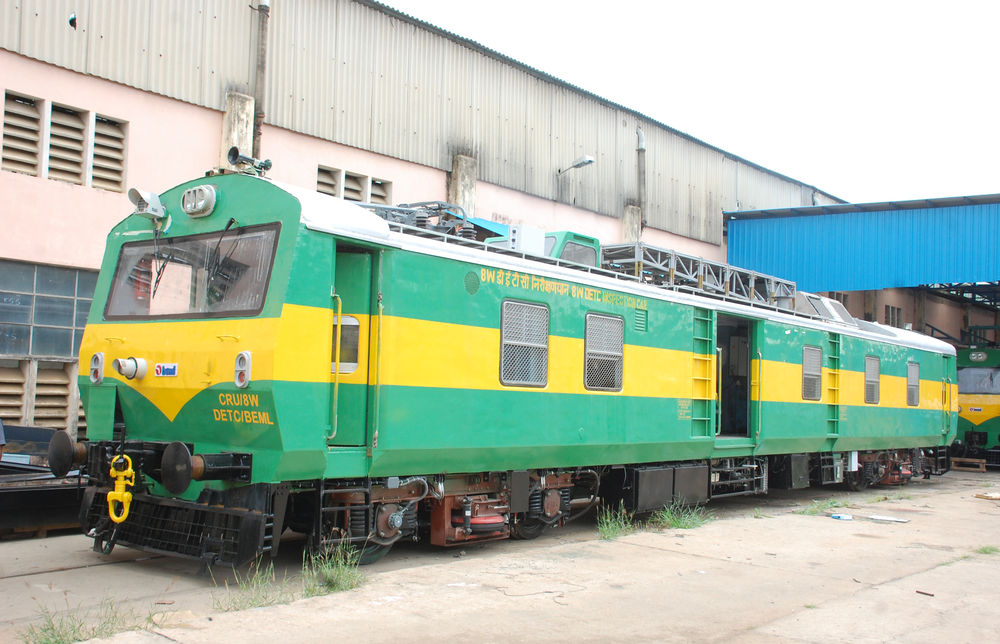

| Feature | Details |
|---|---|
| Max Speed | 110 KMPH |
| Axle Load(max.) | 20.32 Tonnes |
| Braking System | Panel mounted air brake system to RDSO spec. MP-0.01.00.19 (REV-01) |
| Propulsion System | - Motive power of 340 HP @ 1800 RPM from Diesel Engine coupled to 3phase Tractionalternator with power output of 230 kW.. - 4 Traction Motors of 187 kW @ 1520 RPM per car. |
| Bogie | Wheel arrangement- Bo Bo two Stage suspension Primary with Helical & Secondary with Air Spring |
| Hauling Capacity | 80.29 Tonnes Self Weight and 120 Tonnes trailing Load. |
| Engine | Two independent under slung naturally aspirated, turbo-charged and after cooled desiel engines. |
| Power | 340Hp @ 1800rpm |
| Brakes | All wheels with clasp brakes |
| Service Brakes | Pneumatic |
| Parking Brakes | Pneumatically operated |